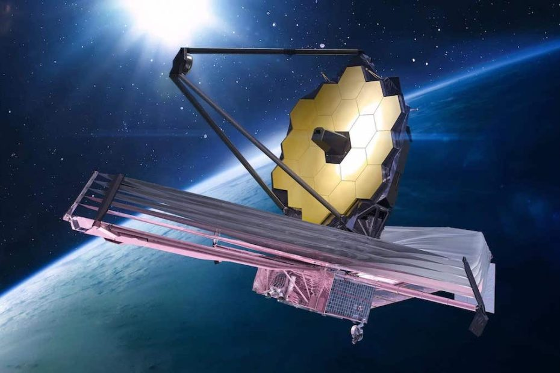

ဂျိမ်းစ်ဝက်ဘ် တယ်လီစကုပ် (James Webb Space Telescope) ကြီးဟာ ကမ္ဘာနဲ့ အဝေးဆုံးမှာ ရှိတဲ့ ရှေးဟောင်း ဂလက်ဆီ အိုကြီး ၄ ခုကို ရှာဖွေ တွေ့ရှိ ခဲ့ပါတယ်။
ဒီ ဂလက်ဆီ တွေအနက်က သက်တမ်း အရင့်ဆုံး၊ အအိုမင်းဆုံး ဂလက်ဆီ ဟာဆိုရင် စကြာဝဠာ ဖြစ်တည်စ Big Bang မဟာပေါက်ကွဲ မှုကြီး အပြီး နှစ်သန်း ၃၂၀ အကြာမှာ မွေးဖွားခဲ့တဲ့ သက်တမ်း အရင့်ဆုံး ဂလက်ဆီ ဖြစ်တယ်လို့ ဆိုပါတယ်။
ပြီးခဲ့တဲနှစ်က စတင် တာဝန်ထမ်းဆောင် ချိန်ကစလို့ ဂျိမ်းစ်ဝက်ဘ် (JWST) တယ်လီစကုပ် ကြီးဟာ အာကာသ သိပ္ပံဆိုင်ရာ အသစ် တွေ့ရှိချက် အများအပြားကို ဆက်တိုက် ဆိုသလို ရှာဖွေ ဖော်ထုတ် ပေးနိုင် ခဲ့ပါတယ်။ JWST တယ်လီ စကုပ်ကြီးဟာ အရင် တယ်လီစကုပ်တွေ မြင်တွေ့နိုင်ခဲ့စွမ်း မရှိခဲ့တဲ့ စကြာဝဠာရဲ့ အနက်ရှိုင်းဆုံး ရပ်ဝန်းတွေ အထိ ကြည့်မြင် နိုင်ခဲ့တဲ့ အတွက်လဲ အရင် တယ်လီစကုပ်တွေက ရှာဖွေ မပေးနိုင် ခဲ့တဲ့ အာကာသရဲ့ လှို့ဝှက်ချက် တွေကို ရှာဖွေ ဖော်ထုတ် ပေးနိုင်ခဲ့တာ ဖြစ်ပါတယ်။
တနည်းအားဖြင့် ဒီလို အဝေးကို မြင်ရတယ် ဆိုတာက အလွန် ဝေးကွာတဲ့ အတိတ်ကို ပြန်ပြီး ကြည့်နေတာလဲ ဖြစ်ပါတယ်။
အလွန် ဝေးကွာတဲ့ အရပ်က အလင်းဟာ ကမ္ဘာကို ရောက်ဖို့ အချိန် အလွန် ကြာမြင့်ပါတယ်။ ဒီလို အလင်း ကမ္ဘာကို ရောက်ဖို့ ဖြတ်သန်း လာခဲ့တဲ့ အချိန် အတောအတွင်းမှာ အလင်းဖြတ်သန်းနေခဲ့တဲ့ အာကာသ ဟင်းလင်းပြင် ကြီးကလဲ အငြိမ် နေတာ မဟုတ်ပါဘူး။
စကြာဝဠာ ကြီးက တချိန်လုံး ပြန်ကား နေတာမို့ ဒီ အလင်း ဖြတ်သန်းလာ ခဲ့တဲ့ အာကာသ ဟင်းလင်းပြင် ဟာလဲ အချိန်နဲ့ အမျှ ပြန့်ကားလို့ နေခဲ့တာ ဖြစ်ပါတယ်။
ဒီလို ဟင်းလင်းပြင် ပြန့်ကားမှုကြောင့် ဒီ ဟင်းလင်းပြင်ထဲ ဖြတ်သန်းသွားတဲ့ အလင်းလှိုင်း တွေဟာလဲ ဒီ ဟင်းလင်းပြင် နဲ့ အတူလိုက်ပြီး ပြန့်ကား ထွက်သွားပါတယ်။
ဒီတော့ အလွန် ဝေးကွာတဲ့ အရပ်က ထွက်လာခဲ့တဲ့ ဒီ အလင်းလှိုင်းတွေဟာ ကမ္ဘာဆီကို ရောက်တဲ့ အချိန်မှာ အရမ်းကို ဆန့်ကားသွားပြီ ဖြစ်ပါတယ်။ ဘယ်လောက်တောင် ဆန့်ကား သွားခဲ့သလဲဆို မူလ အလင်းရောင်စဉ် လှိုင်းတွေဟာ အရမ်း ကားသွားတာမို့ အနီအောက် ရောင်ခြည် (infrared wave) တွေအဖြစ် ပြောင်းလဲလို့ သွားခဲ့ ပါတယ်။ (အနီအောက် ရောင်ခြည်ဟာ အလင်းထက် လှိုင်းအလျှား ပိုရှည်ပါတယ်။)
ဒီလို အလွန်ဝေးကွာတဲ့ အရပ်က အနီအောက် ရောင်ခြည် လှိုင်းတွေကို ဖမ်းယူနိုင်ဖို့ဆို အလွန် အနုစိတ်တဲ့ အာရုံခံ ကိရိယာတွေ လိုအပ်မှာ ဖြစ်ပါတယ်။
JWST မှာ တပ်ဆင်ထားတဲ့ NIRCam အနီအောက်ရောင်ခြည် အာရုံခံ ကိရိယာဟာ ဒီလို ဝေးကွာတဲ့ အရပ်က လာတဲ့ အားပြော့တဲ့ အနီအောက် ရောင်ခြည်ကို ဖမ်းယူနိုင်ဖို့ အထူး ပြုလုပ်ထားတာ ဖြစ်ပါတယ်။ ဒီ အာရုံခံ ကိရိယာရဲ့ အကူအညီနဲ့ ယခင်က တခါမှ မြင်တွေ့ခဲ့ရဖူးတဲ့ ဂလက်ဆီ တွေကို ရှာဖွေ ဖော်ထုတ် ပေးနိုင်တာပဲ ဖြစ်ပါတယ်။
ဒီ အသစ်တွေ့ ဂလက်ဆီ အိုကြီးတွေဟာ နက္ခတ် ပညာရှင် တွေရဲ့ စကြာဝဠာ အပေါ် ယူဆချက် အမြင် တွေကို ပြောင်းလဲကောင်း ပြောင်းလဲ သွားစေနိုင်မယ်လို့ အချို့ ပညာရှင်များက ယုံကြည် ကြပါတယ်။
ဂျိမ်းစ်ဝက်ဘ် တယ်လီစကုပ် ကြီးက အချက်အလက် တွေကို အနုစိတ် ခွဲခြမ်းစိတ်ဖြာ analysis လုပ်နေတဲ့ ပညာရှင် တွေက Nature Astronomy သုတေသန ဂျာနယ်မှာ သူတို့ရဲ့ အသစ် တွေ့ရှိချက်ကို စာတမ်း နှစ်စောင်နဲ့ တင်ပြခဲ့ ကြပါတယ်။ ဒီ စာတမ်းတွေမှာ အသစ် ရှာဖွေ တွေ့ရှိခဲ့တဲ့ စကြာဝဠာ အစဦးက ဂလက်ဆီ ၄ ခုနဲ့ ပါတ်သက်တဲ့ အချက်အလက် တွေကို တင်ပြထားတာ ဖြစ်ပါတယ်။
ဒီ ဂလက်ဆီ ၄ ခု ဟာ Big Bang မဟာပေါက်ကွဲမှုကြီး အပြီး နှစ်သန်း ၃၀၀ နဲ့ ၅၀၀ အကြားမှာ မွေးဖွားခဲ့ ကြတဲ့ ရှေးဦး ဂလက်ဆီတွေ ဖြစ်ကြပါတယ်။ ဒါ့ကြောင့် အခုအချိန်မှာ ဒီ ဂလက်ဆီ တွေရဲ့သက်တမ်းဟာ နှစ်သန်း ၁၃,၀၀၀ (၁၃ ဘီလီယံ) ကျော်ခဲ့ပြီ ဖြစ်ပါတယ်။
ဒီကာလဟာ ပညာရှင် တွေက စကြာဝဠာရဲ့ ပထမ ဦးဆုံး ကြယ်တွေ စတင် မွေးဖွားခဲ့တဲ့ ကာလ ဖြစ်မယ်လို့ ယုံကြည်ထားတဲ့ ကာလ ဖြစ်ပါတယ်။ ဒီ အချိန်ဟာ အမှောင်အတိ လွှမ်းနေတဲ့ စကြာဝဠာ ကြီးအတွင်း အလင်းရောင် စတင် ထွက်ပေါ် လာခဲ့ချိန်လဲ ဖြစ်ပါတယ်။
Astrophysics Institute of Paris က သုတေသီ တစ်ဦးဖြစ်သူ စတီဖင် ရှားလော့တ် (Stephane Charlot) ဟာ အခု သုတေသန စာတမ်း နှစ်စောင်မှာ အတူပါဝင် ရေးသားခဲ့တဲ့ ပညာရှင် တစ်ဦး ဖြစ်ပါတယ်။
သူ့က အခု တွေ့ရှိတဲ့ အထဲက အဝေးဆုံး ဖြစ်တဲ့ ဂလက်ဆီဟာ Big Bang ပြီးစ နှစ်သန်း ၃၂၀ အကြာမှာ ထွက်ပေါ် မွေးဖွားလာ ခဲ့တဲ့ ရှေးဦး ဂလက်ဆီ တစ်ခု ဖြစ်ကြောင်း ရှင်းပြပါတယ်။ JADES-GS-z13-0 လို့ အမည်ပေး ထားတဲ့ ဒီ ဂလက်ဆီဟာ အခုထိ ရှာဖွေ တွေ့ရှိ ခဲ့ဖူးသမျှ ဂလက်ဆီ တွေအနက် သက်တမ်း အရင့်ဆုံး ဂလက်ဆီ ဖြစ်ပါတယ်။
နောက်ထပ် ဂလက်ဆီ တစ်ခုကတော့ JADES-GS-z10-0 လို့ အမည်ပေးထားတဲ့ ဂလက်ဆီ ဖြစ်ပါတယ်။ ဒီ ဂလက်ဆီကတော့ မဟာ ပေါက်ကွဲမှု အပြီး နှစ်သန်း ၄၅၀ ခန့်အကြာမှာ မွေးဖွားလာ ခဲ့တဲ့ ရှေးဦး ဂလက်ဆီ တစ်ခုဖြစ်ပါတယ်။ ဒီ ဂလက်ဆီ ကိုတော့ အရင်က ဟတ်ဘယ် တယ်လီစကုပ် (Hubble Space Telescope) က ရှာဖွေ တွေ့ရှိခဲ့ပြီး ဖြစ်ပါတယ်။
အခု တင်ပြခဲ့တဲ့ ဂလက်ဆီ ၄ ခုလုံးရဲ့ ထူးခြားချက် ကတော့ သူတို့ရဲ့ စုစုပေါင်း ဒြပ်ထုဟာ အလွန် နည်းပါးနေတာပဲ ဖြစ်ပါတယ်။ ဒီ ဂလက်ဆီ ၄ လုံး လုံးဟာ တစ်ခုကို ကြယ်အစင်း သန်း တစ်ရာ လောက်ပဲ ဒြပ်ထု ပမာဏ ရှိကြပါတယ်။
နှိုင်းယှဉ်ပြီး ပြောရမယ်ဆို ကျွန်တော်တို့ မစ်ကီးဝေးရဲ့ စုစုပေါင်း ဒြပ်ထုဟာ ကြယ်အစင်း ၁.၅ သန်း ခန့်နဲ့ ညီမျှပါတယ်။ ဒီတော့ မစ်ကီးဝေးနဲ့ ယှဉ်ရင် ဒီ ဂလက်ဆီ တွေဟာ အလွန် သေးငယ်တဲ့ ဂလက်ဆီ လေးတွေ ဖြစ်နေပါတယ်။
ဒီလို အရွယ် သေးငယ်ပေမယ့် ဒီ ဂလက်ဆီ တွေရဲ့ ကြယ်သစ်တွေ မွေးဖွားနှုန်းကတော့ အံ့မခန်းအောင် မြင့်မားလို့ နေပါတယ်။ ဒီ ဂလက်ဆီ တွေဟာ ကြယ်သစ်တွေကို မစ်ကီးဝေး ဂလက်ဆီ ကြီးက မွေးဖွားတဲ့ နှုန်းအတိုင်း မွေးဖွား ပေးနေတာ ဖြစ်ပါတယ်။ ဒါဟာ သိပ္ပံ ပညာရှင်တွေ လုံးဝ ထင်မှတ် မထားခဲ့တဲ့ နှုန်းထားပဲ ဖြစ်ပါတယ်။
နောက်ထပ် တွေ့ရှိရတဲ့ အချက်တခုကတော့ ဒီ ဂလက်ဆီ တွေအတွင်းမှာ ပါဝင်တဲ့ သတ္တုဓါတ် ပမာဏဟာ အလွန်ပဲ နည်းပါး နေတာပဲ ဖြစ်ပါတယ်။
ဒီအချက်ကတော့ စကြာဝဠာ မွေးဖွားခြင်းနဲ့ သက်ဆိုင်တဲ့ သီအိုရီ တွေရဲ့ ခန့်မှန်းချက်နဲ့ ကိုက်ညီ နေပါတယ်။
ဒီ သီအိုရီ အရ Big Bang ကာလနဲ့ နီးလေလေ ဂလက်ဆီ တွေရဲ့ သတ္တု ပါဝင်မှုနှုန်း နည်းပါးလေလေပဲ ဖြစ်ပါတယ်။ ဘာ့ကြောင့်ဆို စကြာဝဠာ အတွင်းက သတ္တုတွေဟာ ကြယ်တွေရဲ့ အတွင်းမှာ ထုတ်လုပ်ပေးတာ ဖြစ်တာမို့ စကြာဝဠာ အစောပိုင်း ကာလမှာ တုန်းက ကြယ်တွေကနေ လုံလောက်တဲ့ သတ္တုဒြပ်စင်တွေ မထုတ်လုပ် ပေးနိုင် သေးလို့ပဲ ဖြစ်ပါတယ်။
ဒါပေမယ့် ပြီးခဲ့တဲ့ ဖေဖော်ဝါရီ လတုန်းက Big Bang အပြီး နှစ်သန်း ၅၀၀ နဲ့ ၇၀၀ အကြားမှာ မွေးဖွားခဲ့တဲ့ ဧရာမ ဂလက်ဆီကြီး ၆ ခုကို ရှာဖွေ တွေ့ရှိ ခဲ့ကြပါတယ်။ ဒီ ရှာဖွေ တွေ့ရှိမှုဟာ စကြာဝဠာ မွေးဖွားခြင်းနဲ့ ဆိုင်တဲ့ မဟာပေါက်ကွဲမှု သီအိုရီကို မေးခွန်း ထုတ်စရာ ဖြစ်လာ ပါတော့တယ်။
ဖေဖော်ဝါရီ လက တွေ့ရှိခဲ့တဲ့ ဂလက်ဆီ တွေရဲ့ အရွယ်အစားဟာ ဒီလောက် အချိန်တိုအတွင်း ကြီးမားလော လောက်နိုင်တဲ့ အရွယ်အစား မဟုတ်ပါဘူး။ ဒီတော့ အချို့သော ပညာရှင် တွေက မဟာပေါက်ကွဲမှု သီအိုရီဟာ မှန်မှ မှန်ပါ့မလားလို့ သံသယ ဖြစ်လာ ခဲ့ကြပါတယ်။
ဒါပေမယ့် အခု ဂလက်ဆီ အသစ် ၄ ခုကတော့ မဟာ ပေါက်ကွဲမှု သီအိုရီကို ထပ်ဆင့် အတည်ပြု ပေးလိုက်တာပဲ ဖြစ်ပါတယ်။
အခုဆို ကျွန်တော်တို့ဟာ စကြာဝဠာ အစပိုင်း နှစ်သန်း ၃၀၀ ခန့် ကာလအထိ မြင်နိုင်စွမ်းနေပြီ ဖြစ်ပါတယ်။ တနည်းအားဖြင့် ကျွန်တော်တို့ ရှာဖွေ စူးစမ်း နိုင်စွမ်း မရှိတဲ့ ကာလသည် မဟာပေါက်ကွဲမှု အပြီး စကြာဝဠာ ဖြစ်တည်စ ပထမ နှစ်သန်း ၃၀၀ ပဲ ကျန်ပါတော့တယ်။
အတည်မပြုရ သေးတဲ့ သတင်းတွေ အရ JWST တယ်လီစကုပ် ကြီးဟာ ဒီ့ထက် ပိုစောတဲ့ ဂလက်ဆီ အချို့ကိုပါ ရှာတွေ့ ထားပြီလို့ ဆိုပါတယ်။ ဒါပေမယ့် ဒီ ဂလက်ဆီ တွေရဲ့ သက်တမ်းကိုတော့ အခု အချိန်ထိ မှန်ကန်ကြောင်း အတည်ပြုနိုင်ခြင်း မရှိသေးဘူးလို့ သိရပါတယ်။
Ref: Webb telescope discovers oldest galaxies ever observed | Phys
သက်တမ်းအရင့်ဆုံး ဂလက်ဆီ James Webb ရှာတွေ့

April 24, 2023
Other Posts
- စကြာဝဠာ၏ လျှို့ဝှက်နံပါတ်
- ပြင်မရအောင် ပျက်နေပြီ ဆိုတဲ့ အပြည်ပြည် ဆိုင်ရာ အာကာသ စခန်းကြီး
- အီဂျစ် မံမီ ရုပ်ကြွင်း ၂၅၀ ရှာဖွေတွေ့ရှိ
- အာကာသထဲ ရွက်လွှင့်မယ်
- လကမ္ဘာ သွားမည့် အာတီးမီးစ် ဒုံးပျံ အောင်မြင်စွာ လွှတ်တင်
- ဆွဲငင်အား (Gravity) ဆိုတာဘာလဲ
- ရှေးအကျဆုံး အီဂျစ်မံမီ ရှာတွေ့
- နာဆာက လွှတ်တင်မယ့် နေစွမ်းအားသုံး ဒုံးစက်တပ် အာကာသယာဉ်
- ကမ္ဘာပြင်ပသက်ရှိများ တွေ့ရှိမှုအတွက် ကြိုတင်ပြင်ဆင်ရန် ဘာသာရေး ပညာရှင်များကို နာဆာ ငှားရမ်း
- အိုင်းစတိုင်း၏ လက်ရေးစာတမ်း ဒေါ်လာ ၁၃ သန်းနှင့် ရောင်းချ